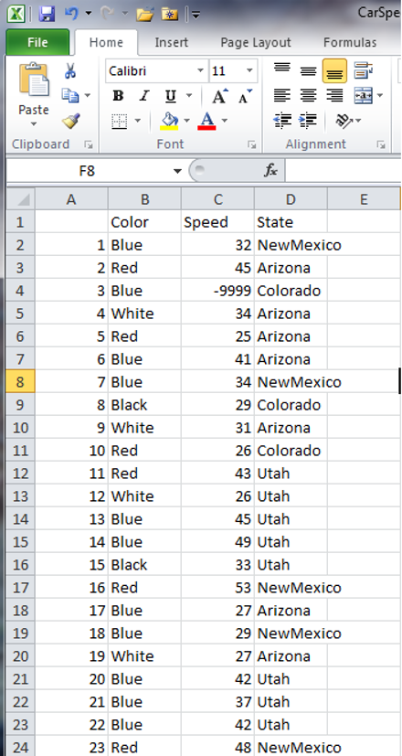
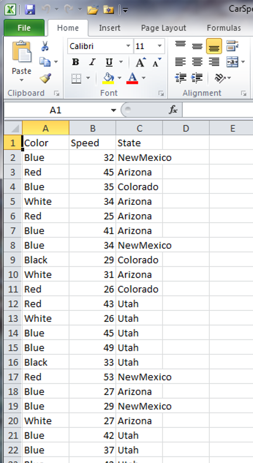
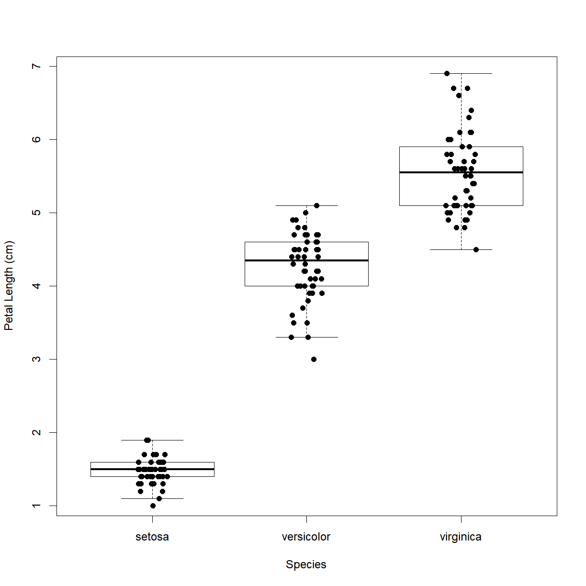
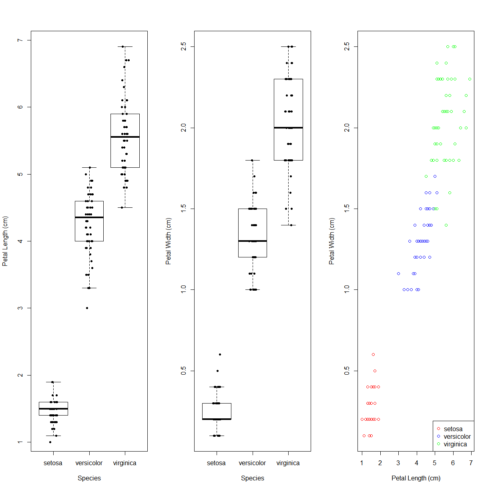
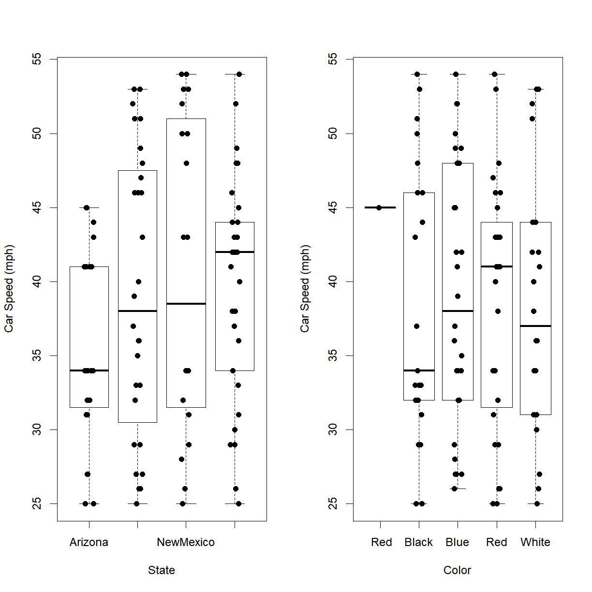

Introduction to R -- Reading, Writing, and Plotting Data
Overview
Class Date: 9/9/2019
Teaching: 80 min
Exercises: 25 minQuestions
How do I read data from a .csv or .txt file into R?
How do I write data to a .csv or .txt file?
How do I calculate simple statistics from my data?
How can I plot my data?
How do I save my plots to a PDF file?
Objectives
Import data from a .csv or .txt file using the
read.table(...),read.csv(...), andread.delim(...)functions.Use
mean,max,min, andsdto calculate simple statistics.Write data to a new .csv or .txt file using the
write.table(...)andwrite.csv(...)functions.Display simple graphs.
Save plot(s) to a PDF file.
Reading data from a tabulated file (.csv, .txt)
In the majority of cases, your data will be stored in some type of external file. The most common way that scientists store data is in Excel spreadsheets. While there are R packages designed to access data from Excel spreadsheets (e.g., gdata, RODBC, XLConnect, xlsx, RExcel), these packages are often difficult and non-intuitive to use. When you start dealing with larger datasets, accessing data from Excel files in R also gets slow. users often find it easier to save their spreadsheets in one or more comma-separated values (CSV or .csv) or text (TXT or .txt) files and then use R’s built in functionality to read and manipulate the data. Both file types are more primitive forms of table/spreadsheet in which data is stored as text with distinct data elements separated by a delimiting character (a comma , for .csv files and usually a tab \t for .txt files).
Thankfully, Excel is capable of opening, editing, and saving both .csv and .txt files, so we can go back and forth between R and Excel when we find it convenient.
In this short lesson, we’ll learn how to read external data from a .csv or .txt file, and write data modified or generated in R to a new .csv or .txt file. We will also explore the arguments that allow you read and write the data correctly for your needs.
Loading external data into a data frame
Let’s start by loading some sample data and take a look at the first few rows of the contents using the head():
dat <- read.csv(file = 'data/sample.csv')
Open up the same file using a basic text editor (e.g. Notepad in Windows; TextEdit in MacOS). You should see something like this:
“ID”,”Gender”,”Group”,”BloodPressure”,”Age”,”Aneurisms_q1”,”Aneurisms_q2”,”Aneurisms_q3”,”Aneurisms_q4” “Sub001”,”m”,”Control”,132,16,114,140,202,237 “Sub002”,”m”,”Treatment2”,139,17.2,148,209,248,248 “Sub003”,”m”,”Treatment2”,130,19.5,196,251,122,177 “Sub004”,”f”,”Treatment1”,105,15.7,199,140,233,220 “Sub005”,”m”,”Treatment1”,125,19.9,188,120,222,228 “Sub006”,”M”,”Treatment2”,112,14.3,260,266,320,294
A couple of things to notice:
- The first line contains column headers.
- The
,delimiters tell theread.csv(...)function where the breaks in the data are located; that is, which data to put in which column of the output data frame. - Each new line is also a delimiter that tells
read.csv(...)which data to put in which row in the output data frame - In this case, all strings are contained within quotation marks
"". This is an optional way to tell the program where character strings start and stop.
On the topic of using quotation marks, open sample-noquotes.csv in your text editor to see the quote-free option:
ID,Gender,Group,BloodPressure,Age,Aneurisms_q1,Aneurisms_q2,Aneurisms_q3,Aneurisms_q4 Sub001,m,Control,132,16,114,140,202,237 Sub002,m,Treatment2,139,17.2,148,209,248,248 Sub003,m,Treatment2,130,19.5,196,251,122,177 Sub004,f,Treatment1,105,15.7,199,140,233,220 Sub005,m,Treatment1,125,19.9,188,120,222,228 Sub006,M,Treatment2,112,14.3,260,266,320,294
And note that the default read.csv(...) treats this file identically:
dat2 <- read.csv(file = 'data/sample-noquotes.csv')
head(dat2)
ID Gender Group BloodPressure Age Aneurisms_q1 Aneurisms_q2
1 Sub001 m Control 132 16.0 114 140
2 Sub002 m Treatment2 139 17.2 148 209
3 Sub003 m Treatment2 130 19.5 196 251
4 Sub004 f Treatment1 105 15.7 199 140
5 Sub005 m Treatment1 125 19.9 188 120
6 Sub006 M Treatment2 112 14.3 260 266
Aneurisms_q3 Aneurisms_q4
1 202 237
2 248 248
3 122 177
4 233 220
5 222 228
6 320 294
Whether to use quotes in your data files is up to you. The default behavior of read.csv(...) is smart enough to figure this out on it’s own. However, the read.csv(...) has an argument called quote that dictates how to interpret quotation marks.
Mis-loading quoted data
What if we force
read.csv("")to ignore the quotes when they are present? Before you run any code, think about what will happen to the data in quotes if we tell R that there are no “quote” characters.dat3 <- read.csv(file = 'data/sample.csv', quote="") head(dat3)Solution
The quotes are now included as part of the character arguments. It also messed up the header formatting, appending an “X” to the beginning and surrounding text with “.”ss.
What happens if we don’t assign the output of read.csv(...) to a variable?
read.csv(file = 'data/sample.csv')
As with any other function call, if the output is not explicitly assigned, it will be dumped into the console window.
Changing Delimiters
The default delimiter of the read.csv() function is a comma ,, but you can
use essentially any set of characters as a delimiter. read.csv(...) is actually a special case of a broader function called read.table(...), with the delimiter argument (which is sep, for “separator”) set to c by default. Check out the help file for these functions:
?read.table # note that `?read.csv` brings up the same help document.
Under the Usage section there are multiple functions listed, including read.table(...) and read.csv(...). In the parentheses for each function there is a list of arguments. Since read.table(...) is the parent function, all arguments are listed. Only arguments with different default values (as indicated by the =) are listed for read.csv(...). A default value is the value that each argument assumes when you do not explicitly enter a value. For example, read.table(...) assumes that a data file has no header (header = FALSE) and no delimiting character (sep = "") while read.csv(...) assumes that a data file does have a header (header = TRUE) and a comma as the delimiting character (sep = ","), unless you specify otherwise.
If your data is stored in a tab-delimited text file, you will need to use read.table(...) a different delimiting character, or another of the associated functions called read.delim(...) which has defaults to a tab-delimited file format. Note that to define a tab as a delimiting character, you have to use \t.
Let’s give it a try using a copy of the sample.csv data saved as a tab-delimited sample.txt file.
Note: From the help file, read.delim(...) defaults to header = TRUE while we have to explicity definit it when using read.table(...). We will talk about what this means in the next section.
# note that read
dat4 <- read.delim(file = 'data/sample.txt')
dat5 <- read.table(file = 'data/sample.txt', header = TRUE)
head(dat4)
ID Gender Group BloodPressure Age Aneurisms_q1 Aneurisms_q2
1 Sub001 m Control 132 16.0 114 140
2 Sub002 m Treatment2 139 17.2 148 209
3 Sub003 m Treatment2 130 19.5 196 251
4 Sub004 f Treatment1 105 15.7 199 140
5 Sub005 m Treatment1 125 19.9 188 120
6 Sub006 M Treatment2 112 14.3 260 266
Aneurisms_q3 Aneurisms_q4
1 202 237
2 248 248
3 122 177
4 233 220
5 222 228
6 320 294
head(dat5)
ID Gender Group BloodPressure Age Aneurisms_q1 Aneurisms_q2
1 Sub001 m Control 132 16.0 114 140
2 Sub002 m Treatment2 139 17.2 148 209
3 Sub003 m Treatment2 130 19.5 196 251
4 Sub004 f Treatment1 105 15.7 199 140
5 Sub005 m Treatment1 125 19.9 188 120
6 Sub006 M Treatment2 112 14.3 260 266
Aneurisms_q3 Aneurisms_q4
1 202 237
2 248 248
3 122 177
4 233 220
5 222 228
6 320 294
Now let’s take a closer look at a couple of useful arguments in read.table(...) family of functions.
The header Argument
The default for read.csv(...) and read.delim(...) is to set the header argument to TRUE. This means that the first row of values in the .csv or .txt is used to define the column names for the data frame. If your data set does not have a header, set the header argument to FALSE.
Mis-loading data with headers
What happens if you forget to put
header = FALSE? The default value isheader = TRUE, which you can check with?read.csvorhelp(read.csv). What do you expect will happen if you leave the default value? Before you run any code, think about what will happen to the first few rows of your data frame, and its overall size. Then run the following code and see if your expectations agree:dat6 <- read.csv(file = 'data/sample.csv', header = FALSE) head(dat6)Solution
The
read.csv(...)function sets the column names as the default values (V1, V2, V3, ...) and treats the first row of thesample.csvfile as the first row of data. Clearly this is not the desired behavior for this data set, but it will be useful if you have a dataset without headers. Note that theVis prepended just a number would not be a valid variable name.
The stringsAsFactors Argument
This is perhaps the most important argument in read.csv(...), particularly if you are working with categorical data. This is because the default behavior of R is to convert character strings into factors, which may make it difficult to do such things as replace values.
For example, let’s look at the car-speeds.csv data set. We find out that the data collector was color blind, and accidentally recorded green cars as being blue. In order to correct the data set, let’s replace ‘Blue’ with ‘Green’ in the $Color column:
# First - load the data and take a look at what information is available
carSpeeds <- read.csv(file = 'data/car-speeds.csv')
head(carSpeeds)
Color Speed State
1 Blue 32 NewMexico
2 Red 45 Arizona
3 Blue 35 Colorado
4 White 34 Arizona
5 Red 25 Arizona
6 Blue 41 Arizona
# Next use indexing to replace all `Blue` entries in the Color column with 'Green'
carSpeeds$Color[carSpeeds$Color == 'Blue'] = 'Green'
Warning in `[<-.factor`(`*tmp*`, carSpeeds$Color == "Blue", value =
structure(c(NA, : invalid factor level, NA generated
What happened? The colors of the cars were loaded as factors by read.csv(...) by default. Since Green was not in the original set of colors, it was not included as a level in the factor.
To see the internal structure, we can use another function, str(). In this case,
the dataframe’s internal structure includes the format of each column, which is what
we are interested in.
str(carSpeeds)
'data.frame': 100 obs. of 3 variables:
$ Color: Factor w/ 5 levels " Red","Black",..: NA 1 NA 5 4 NA NA 2 5 4 ...
$ Speed: int 32 45 35 34 25 41 34 29 31 26 ...
$ State: Factor w/ 4 levels "Arizona","Colorado",..: 3 1 2 1 1 1 3 2 1 2 ...
We can see that the $Color and $State columns are factors and $Speed is a numeric column.
One way to solve this problem would be to add the Green level to the Color factor, but there is a simpler way. Let’s reload the dataset using stringsAsFactors = FALSE, and see what happens when we try to replace ‘Blue’ with ‘Green’ in the $Color column:
# First - load the data and take a look at what information is available
carSpeeds <- read.csv(file = 'data/car-speeds.csv', stringsAsFactors = FALSE)
str(carSpeeds)
'data.frame': 100 obs. of 3 variables:
$ Color: chr "Blue" " Red" "Blue" "White" ...
$ Speed: int 32 45 35 34 25 41 34 29 31 26 ...
$ State: chr "NewMexico" "Arizona" "Colorado" "Arizona" ...
# Next use indexing to replace all `Blue` entries in the Color column with 'Green'
carSpeeds$Color[carSpeeds$Color == 'Blue'] = 'Green'
carSpeeds$Color
[1] "Green" " Red" "Green" "White" "Red" "Green" "Green" "Black"
[9] "White" "Red" "Red" "White" "Green" "Green" "Black" "Red"
[17] "Green" "Green" "White" "Green" "Green" "Green" "Red" "Green"
[25] "Red" "Red" "Red" "Red" "White" "Green" "Red" "White"
[33] "Black" "Red" "Black" "Black" "Green" "Red" "Black" "Red"
[41] "Black" "Black" "Red" "Red" "White" "Black" "Green" "Red"
[49] "Red" "Black" "Black" "Red" "White" "Red" "Green" "Green"
[57] "Black" "Green" "White" "Black" "Red" "Green" "Green" "White"
[65] "Black" "Red" "Red" "Black" "Green" "White" "Green" "Red"
[73] "White" "White" "Green" "Green" "Green" "Green" "Green" "White"
[81] "Black" "Green" "White" "Black" "Black" "Red" "Red" "White"
[89] "White" "White" "White" "Red" "Red" "Red" "White" "Black"
[97] "White" "Black" "Black" "White"
That’s better! And we can see how the data now is read as character instead of factor.
Writing tabular data to a file (.csv, .txt)
After altering our cars dataset by replacing ‘Blue’ with ‘Green’ in the $Color column, we now want to save the output. The read.table(...) function family has a corresponding set of write.table(...) functions. These functions have a familiar set of arguments:
?read.table
Here is the basic format for writing a table:
# Export the data. The write.csv() function requires a minimum of two
# arguments, the data to be saved and the name of the output file.
write.csv(carSpeeds, file = 'data/car-speeds-cleaned.csv')
If you open the file, you’ll see that it has header names, because the data had headers within R, but that there are also numbers in the first column.

This extra column can cause problems when trying to open data in some other programs, and in most cases you won’t want to explicity name the rows. This can be easily disabled with a simple argument:
The row.names Argument
This argument allows us to set the names of the rows in the output data file. R’s default for this argument is TRUE, and since it does not know what else to name the rows for the cars data set, it resorts to using row numbers. To turn row numbers off, we can set row.names to FALSE:
write.csv(carSpeeds, file = 'data/car-speeds-cleaned.csv', row.names = FALSE)
Now we see:

Setting Column Names
There is also a
col.namesargument, which can be used to set the column names for a data set without headers. If the data set already has headers (e.g., we used theheaders = TRUEargument when importing the data) then acol.namesargument will be ignored.
The na Argument
There are times when we want to specify certain values for NAs in the data set (e.g., we are going to pass the data to a program that only accepts -9999 as a nodata value). In this case, we want to set the NA value of our output file to the desired value, using the na argument. Let’s see how this works:
# First, replace the speed in the 3rd row with NA, by using an index (square
# brackets to indicate the position of the value we want to replace)
carSpeeds$Speed[3] <- NA
head(carSpeeds)
Color Speed State
1 Green 32 NewMexico
2 Red 45 Arizona
3 Green NA Colorado
4 White 34 Arizona
5 Red 25 Arizona
6 Green 41 Arizona
write.csv(carSpeeds, file = 'data/car-speeds-cleaned.csv', row.names = FALSE)
Now we’ll set NA to -9999 when we write the new .csv file:
# Note - the na argument requires a string input
write.csv(carSpeeds,
file = 'data/car-speeds-cleaned.csv',
row.names = FALSE,
na = '-9999')
And we see:

This can be useful when exporting data from R in a different program that either does not recognize NA or uses a different symbol for missing data.
Calculating basic statistics
Now let’s perform some common mathematical operations to learn more about our data. Before we begin, let’s clean up our environment and reload our sample data to reset any unintended changes and be sure that we include header=TRUE and stringsAsFactors=FALSE.
rm(list=ls())
dat <- read.csv(file="data/sample.csv", header=TRUE, stringsAsFactors=FALSE)
This data is the results of an (not real) experiment, looking at the number of aneurisms that formed in the eyes of patients who undertook 3 different treatments.
When analyzing data we often want to look at partial statistics, such as the maximum value per patient or the average value per treatment group. One way to do this is to select the data we want to create a new temporary data frame, and then perform the calculation on this subset:
# select aneurism data for the first subject
sub1 <- dat[1, 6:9]
# max number of aneurisms for subject 1
max(sub1)
[1] 237
We don’t actually need to store the row in a variable of its own. Instead, we can combine the selection and the function call:
# max inflammation for subject 2
max(dat[2, 6:9])
[1] 248
R also has functions for other common calculations, e.g. finding the minimum, mean, median, and standard deviation of the data:
# minimum number of aneurisms in q3
min(dat$Aneurisms_q3)
[1] 105
# mean number of aneurisms in q3
mean(dat$Aneurisms_q3)
[1] 219.85
# median number of aneurisms in q3
median(dat$Aneurisms_q3)
[1] 217
# standard deviation number of aneurisms in q3
sd(dat$Aneurisms_q3)
[1] 48.76958
# total number of observations in q3
length(dat$Aneurisms_q3)
[1] 100
R has a function called summary() that provides a convenient summary of each column:
# Summarize function
summary(dat)
ID Gender Group BloodPressure
Length:100 Length:100 Length:100 Min. : 62.0
Class :character Class :character Class :character 1st Qu.:107.5
Mode :character Mode :character Mode :character Median :117.5
Mean :118.6
3rd Qu.:133.0
Max. :173.0
Age Aneurisms_q1 Aneurisms_q2 Aneurisms_q3
Min. :12.10 Min. : 65.0 Min. : 80.0 Min. :105.0
1st Qu.:14.78 1st Qu.:118.0 1st Qu.:131.5 1st Qu.:182.5
Median :16.65 Median :158.0 Median :162.5 Median :217.0
Mean :16.42 Mean :158.8 Mean :168.0 Mean :219.8
3rd Qu.:18.30 3rd Qu.:188.0 3rd Qu.:196.8 3rd Qu.:248.2
Max. :20.00 Max. :260.0 Max. :283.0 Max. :323.0
Aneurisms_q4
Min. :116.0
1st Qu.:186.8
Median :219.0
Mean :217.9
3rd Qu.:244.2
Max. :315.0
For every column in the data frame, summary() provides a different of summary data depending on the class of that column. For instance, for numeric columns, summary() provides minimun, maximum, mean, median, and quartile values.
What if we need the maximum number of aneurisms across quarters for each patient, or perhaps the average across quarters? As the diagram below shows, we want to perform the operation across a margin of the data frame; that is we want to perform the same function (mean()) on the last 4 columns for every row:

To support this, we can use the apply function.
?apply
apply allows us to repeat a function on all of the rows (MARGIN = 1) or columns (MARGIN = 2) of a data frame. Thus, to obtain the average inflammation of each patient we will need to calculate the mean of all of the rows (MARGIN = 1) of the data frame.
avg_aneurisms_subject <- apply(dat[,6:9], 1, mean)
And to obtain the average number of aneurisms for each quarter, mean of all of the columns (MARGIN = 2) of the data frame:
avg_aneurisms_quarter <- apply(dat[,6:9], 2, mean)
Argument Order in Functions
Notice that we did not specify the argument names in
apply(). Looking at the help file, the argument order isX(indicating the input data), thenMARGIN, thenFUN(for function to apply). So long as you enter arguments in the requested order, you do not need to be explicitly about which argument you are referring too.apply()just assumes that the first argument entered is the value forX, the second is the > value forMARGIN, and the third is the value forFUN. You can mix up the order, but then you have to be explicit about which argument you are defining.For example, this will return an error:
avg_aneurisms_subject <- apply(mean, 1, dat[,6:9])while this will be interpreted identically to the earlier function call:
avg_aneurisms_subject <- apply(FUN = mean, MARGIN = 1, X = dat[,6:9])
Efficient Alternatives
Some common operations have more efficient alternatives. For example, you can calculate the row-wise or column-wise means with
rowMeans()andcolMeans(), respectively. Similarly forrowSums()andcolSums().
Exercises
Subsetting More Data
Suppose you want to determine the maximum number of aneurisms for subject 5 across quarters two to four. To do this you would extract the relevant subset from the data frame and calculate the maximum value. Which of the following lines of R code gives the correct answer?
max(dat[5, ])max(dat[7:9, 5])max(dat[5, 7:9])max(dat[5, 7, 9])Solution
Answer: 3
Explanation: You want to extract the part of the data frame representing data for patient 5 from quarter two (column 7) to quarter 4 (column 9). In this data frame, patient data is organised in rows and the days are represented by the columns. Subscripting in R follows the
[i, j]principle, wherei = rowsandj = columns. Thus, answer 3 is correct since the patient is represented by the value for i (5) and the days are represented by the values in j, which is a subset spanning day 9 to 7.
Subsetting and Re-Assignment
Using the data frame
datfrom above: Let’s pretend there was something wrong with the instrument on the first two quarters for every second patient (subjects 2, 4, 6, etc.), which resulted in the measurements being twice as large as they should be.
- Write a vector containing each affected patient (hint:
?seq)- Create a new data frame in which you halve the first two quarters’ values in only those patients
- Print out the corrected data frame to check that your code has fixed the problem
Solution
whichPatients <- seq(2, dim(dat)[1], 2) # i.e., which rows whichQuarters <- seq(6,7) # i.e., which columns indicates quarters 1 and 2; you could also use c(6,7) or 6:7 dat2 <- dat # make a copy of the original data # check the size of your subset: returns `30 5`, that is 30 [rows=patients] by 5 [columns=quarters] dim(dat2[whichPatients, whichQuarters])[1] 50 2dat2[whichPatients, whichQuarters] <- dat[whichPatients, whichQuarters] / 2 dat2ID Gender Group BloodPressure Age Aneurisms_q1 Aneurisms_q2 1 Sub001 m Control 132 16.0 114.0 140.0 2 Sub002 m Treatment2 139 17.2 74.0 104.5 3 Sub003 m Treatment2 130 19.5 196.0 251.0 4 Sub004 f Treatment1 105 15.7 99.5 70.0 5 Sub005 m Treatment1 125 19.9 188.0 120.0 6 Sub006 M Treatment2 112 14.3 130.0 133.0 7 Sub007 f Control 173 17.7 135.0 98.0 8 Sub008 m Treatment2 108 19.8 108.0 119.0 9 Sub009 m Treatment2 131 19.4 117.0 215.0 10 Sub010 f Control 129 18.8 94.0 72.0 11 Sub011 m Treatment1 126 14.8 134.0 155.0 12 Sub012 f Treatment2 96 15.3 76.0 88.5 13 Sub013 f Control 77 16.5 112.0 220.0 14 Sub014 m Control 158 12.6 54.5 75.0 15 Sub015 m Control 81 14.3 146.0 140.0 16 Sub016 m Control 137 15.9 48.5 86.0 17 Sub017 f Treatment1 147 18.4 165.0 157.0 18 Sub018 m Treatment2 130 18.3 79.0 132.5 19 Sub019 m Treatment1 105 15.4 178.0 109.0 20 Sub020 F Treatment1 92 14.3 53.5 94.0 21 Sub021 f Control 111 12.7 174.0 160.0 22 Sub022 m Treatment1 122 15.4 48.5 55.0 23 Sub023 f Treatment2 97 17.2 187.0 239.0 24 Sub024 f Treatment2 118 17.3 94.0 95.5 25 Sub025 m Treatment1 82 16.7 114.0 199.0 26 Sub026 M Treatment1 123 19.6 57.5 80.0 27 Sub027 M Treatment2 126 15.0 128.0 249.0 28 Sub028 f Treatment1 94 16.1 56.0 115.0 29 Sub029 m Control 135 17.6 136.0 109.0 30 Sub030 f Control 108 18.6 51.5 74.0 31 Sub031 f Treatment1 133 18.3 132.0 151.0 32 Sub032 m Treatment1 108 16.7 59.0 77.0 33 Sub033 m Treatment2 122 12.5 166.0 176.0 34 Sub034 m Treatment1 134 14.3 76.0 52.5 35 Sub035 m Treatment1 145 19.7 191.0 148.0 36 Sub036 f Control 133 17.6 76.0 89.0 37 Sub037 f Treatment2 90 17.0 161.0 270.0 38 Sub038 m Treatment2 118 12.2 119.5 92.0 39 Sub039 M Treatment1 113 15.1 132.0 137.0 40 Sub040 m Treatment2 115 17.7 84.0 127.5 41 Sub041 f Treatment1 142 19.0 140.0 184.0 42 Sub042 m Treatment1 114 14.7 83.0 42.5 43 Sub043 m Control 139 15.2 141.0 160.0 44 Sub044 m Treatment1 90 15.3 80.5 84.0 45 Sub045 f Control 126 12.9 103.0 111.0 46 Sub046 f Treatment2 109 18.4 115.5 120.0 47 Sub047 M Control 125 18.1 192.0 141.0 48 Sub048 M Control 99 15.6 89.0 90.0 49 Sub049 m Control 122 19.5 167.0 123.0 50 Sub050 m Treatment1 111 13.5 67.5 75.0 51 Sub051 m Treatment2 109 13.5 150.0 166.0 52 Sub052 f Treatment1 134 13.7 96.0 40.0 53 Sub053 f Treatment1 113 18.7 153.0 153.0 54 Sub054 f Treatment2 105 12.2 102.5 132.0 55 Sub055 m Treatment2 125 16.9 117.0 194.0 56 Sub056 f Treatment2 123 19.5 99.5 59.5 57 Sub057 m Control 155 12.1 182.0 129.0 58 Sub058 m Treatment2 117 17.0 90.0 98.0 59 Sub059 m Treatment1 116 19.2 111.0 111.0 60 Sub060 f Control 133 14.7 50.5 49.0 61 Sub061 f Control 94 20.0 166.0 167.0 62 Sub062 f Treatment2 106 14.1 79.0 85.5 63 Sub063 f Treatment1 144 14.7 189.0 178.0 64 Sub064 M Treatment1 149 16.6 94.5 50.5 65 Sub065 f Treatment2 108 15.0 239.0 189.0 66 Sub066 m Treatment1 116 15.0 92.5 112.0 67 Sub067 f Treatment2 136 13.8 224.0 112.0 68 Sub068 f Control 98 14.8 52.0 69.5 69 Sub069 M Treatment2 148 19.1 222.0 199.0 70 Sub070 m Control 74 18.9 53.5 49.0 71 Sub071 m Treatment2 147 17.7 153.0 255.0 72 Sub072 m Control 116 17.4 59.0 82.5 73 Sub073 F Treatment1 133 15.5 102.0 184.0 74 Sub074 m Control 97 13.1 94.0 62.5 75 Sub075 m Treatment2 132 12.2 180.0 283.0 76 Sub076 f Treatment2 153 17.0 89.0 107.0 77 Sub077 M Treatment1 151 17.7 168.0 184.0 78 Sub078 M Treatment1 121 19.5 59.0 85.0 79 Sub079 M Treatment1 116 19.5 169.0 114.0 80 Sub080 f Control 104 12.8 78.0 69.0 81 Sub081 m Treatment2 111 17.6 232.0 211.0 82 Sub082 M Treatment1 62 17.7 94.0 54.0 83 Sub083 M Treatment2 124 14.2 169.0 168.0 84 Sub084 m Treatment2 124 19.2 120.5 116.5 85 Sub085 m Treatment2 109 16.0 65.0 207.0 86 Sub086 f Control 117 15.2 112.5 92.5 87 Sub087 f Control 90 17.6 104.0 116.0 88 Sub088 f Treatment1 158 17.6 89.5 79.0 89 Sub089 m Treatment1 113 15.1 103.0 140.0 90 Sub090 m Control 150 17.8 56.0 65.0 91 Sub091 f Treatment2 115 16.2 226.0 170.0 92 Sub092 m Treatment2 83 16.6 114.0 110.5 93 Sub093 F Control 116 19.1 209.0 142.0 94 Sub094 f Treatment1 141 17.2 76.5 52.0 95 Sub095 m Control 108 13.6 111.0 118.0 96 Sub096 m Control 102 14.6 74.0 66.0 97 Sub097 F Treatment2 90 19.6 141.0 196.0 98 Sub098 m Treatment1 133 17.0 96.5 56.0 99 Sub099 M Treatment2 83 16.2 130.0 226.0 100 Sub100 M Treatment1 122 18.4 63.0 78.5 Aneurisms_q3 Aneurisms_q4 1 202 237 2 248 248 3 122 177 4 233 220 5 222 228 6 320 294 7 154 245 8 279 251 9 181 272 10 192 185 11 247 223 12 323 245 13 225 195 14 177 189 15 239 223 16 203 207 17 200 193 18 243 187 19 206 182 20 167 218 21 203 183 22 194 133 23 281 214 24 256 265 25 242 195 26 158 228 27 294 315 28 281 126 29 105 155 30 219 228 31 234 162 32 260 160 33 253 233 34 197 299 35 166 185 36 158 170 37 232 284 38 317 269 39 193 206 40 273 274 41 239 202 42 179 196 43 179 239 44 212 181 45 254 126 46 260 310 47 180 225 48 169 183 49 236 224 50 208 279 51 153 204 52 138 222 53 236 216 54 269 207 55 216 211 56 183 251 57 226 218 58 250 294 59 244 201 60 178 116 61 232 241 62 237 212 63 177 238 64 193 172 65 297 300 66 151 182 67 304 288 68 211 204 69 280 196 70 204 138 71 218 234 72 220 227 73 246 222 74 191 157 75 204 298 76 291 240 77 184 229 78 249 249 79 248 233 80 218 258 81 219 246 82 180 136 83 180 211 84 292 182 85 234 235 86 195 235 87 173 221 88 216 244 89 209 186 90 175 191 91 307 244 92 316 259 93 199 184 94 194 214 95 173 191 96 200 194 97 322 273 98 123 181 99 286 281 100 129 160
Correcting Case in Gender
Take a closer look at the gender break down of our aneurism patient group. You can use the
table()function to give you a count of each category for a categorical vector:table(dat$Gender)f F m M 35 4 46 15What is going on here? It appears that the person entering this data sometimes used
mand sometimesMto indicatemale, and similarlyforFto indicatefemale(or perhaps there were two individuals entering the data in slightly different ways). This is a problem, because R is case-sensitive and treatsmas a different entry fromM.Use logical indexing to correct this problem. So we are all on the same page, change all entries to capitals. Save your corrected file to the data folder under the file name “sample-gendercorrected.csv”.
Solution
# first make a copy of the data (never overwrite your raw data) dat_cor <- dat # correct `f` entries to `F` dat_cor$Gender[dat_cor$Gender == 'f'] = 'F' # correct `m` entries to `M` dat_cor$Gender[dat_cor$Gender == 'm'] = 'M' # check the output using `table()` table(dat_cor$Gender) # save corrected data file write.csv(dat_cor, file="data/sample-gendercorrected.csv", row.names = FALSE)
Using the Apply Function on Patient Data
The apply function can be used to summarize datasets and subsets of data across rows and columns using the MARGIN argument. Suppose you want to calculate the mean number of aneurisms for specific quarters and patients in the patient dataset.
Use a combination of the apply function and indexing to:
- Calculate the mean number of aneurisms for patients 1 to 5 over all four quarters.
- Calculate the mean number of aneurisms for quarters 1 to 3 (across all patients).
- Calculate the mean number of aneurisms for each patient in treatment group 2 day (across all quarters).
Think about the number of rows and columns you would expect as the result before each apply call and check your intuition by applying the mean function.
Solution
# 1. apply(dat[1:5, 6:9], 1, mean) # 2. apply(dat[, 6:8], 2, mean) # 3. apply(dat[dat$Group == "Treatment2", 6:9], 1, mean)
Plotting
The mathematician Richard Hamming once said,
“The purpose of computing is insight, not numbers.”
The best way to develop insight is often to visualize data. Visualization deserves an entire lecture (or course) of its own, and we will touch on various aspects of R’s plotting functionality later on in the course, but for now we will introduce a few of R’s plotting features.
The basic plot function in R is called, conveniently, plot(). Let’s take a quick look:
?plot
In it’s most basic form, plot(x,y) function will create a scatter plot with points defined by the vectors x and y. Let’s start out with the iris data set and look at the relationship between petal length and width:
plot(iris$Petal.Length, iris$Petal.Width)

Congratulations! You have plotted your first data in R. So what is going on in the background here? Let’s talk about what R is actually doing when you give it the plot command.
Graphics devices
When you tell R to run a plot, it actually takes a series of actions:
- Opens a new “graphics device”. This device can be one of several things:
a. The “Plot” section in the lower-right panel of RStudio (this is the default in RStudio).
b. A blank graphics pane in a new window (this requires the
windows()orquartz()commands, which we discuss below). c. An external image file (e.g. a new .jpg file). d. An external PDF file (complete with vector graphics!). - Draws a series of objects; this part is done “under the hood” of the
plot()function, and includes: a. Axes. b. Tick marks. c. Axis labels. d. Data points. e. Legend(s). f. Chart titles. - Leaves the current graphics device open for additional drawing input. This step is important, because it means that you can continue to add things to the image using other functions.
- Closes the graphics device following a
dev.off()function call. This essentially “finalizes” the image.
Note that you can have multiple graphics devices open at once. R will, by default, write new graphics to the most recently used or created graphics device. Some functions, like plot() automatically start a new graphics device (or page in the case of the RStudio panel or a PDF), while other functions, like lines(), will add graphical elements to the most recently used device.
Let’s repeat our above plot() command in a few different devices to illustrate a few of these points.
Plotting in a separate window
To plot in a separate window within RStudio (rather than the “Plot” panel), use one of the following platform-dependent functions:
windows() # Windows
quartz() # MacOS
Now recreate our above plot:
plot(iris$Petal.Length, iris$Petal.Width)

Note that we can now add additional elements to this plot. Let’s add a chart title to demonstrate the point.
title("Relationship between petal length and petal width")

We can shutdown the window by either just closing it, or from RStudio using the dev.off() function.
dev.off()
null device
1
Plotting to an external file
R has a series of functions designed to open a graphics device that will write directly to an external file. These files can be image files or PDFs.
bmp()generates a .bmpjpeg()generates a .jpgpng()generates a .pngtiff()generates a .tifpdf()generates a .pdf
The first four are all versions of the same function and behave essentially interchangably. PDF is a separate function. The primary difference between the two is that the non-PDF image files will have a defined resolution, while the PDF files are generated as vector graphics, meaning that they maintain resolution at any size.
Vector Graphics
Traditional image formats (e.g. .bmp, .jpg, .tiff, .png) are, in essence, a two dimensional array of color and intensity values (such as red-green-blue, or RGB values). The array has a fixed number of pixels in each dimension, so if you take an image that is 1 in x 1 in with 100 pixels in each dimension, and blow it up to 1 ft x ft, it still only has 100 pixels in each dimension. The blowup image will appear blocky, or “pixelated”.
Vector graphics are distinct from traditional graphics in that they are defined by a set of mathematical operations carried out at specified > coordinates. For example, two of the instructions may be something like:
- Draw the letter “A” in normal size 10 Arial font at coordinates (10, 10).
- Draw the an arrow with line weight 2 and arrow head style X size 4 from the point (12, 12) to the point (20, 20).
These instructions are the same for a 1 in x 1 in image and a 1 ft x 1 ft image (or a 1 mile x 1 mile image). Because the shape of the letter and the arrow are defined by the font and the arrow head style, when the image is rendered, they can be drawn with the appropriate number of pixels to appear crisp and smooth at the image size requested.
This is how PDF files and other vector graphic formats work. They are really convenient for preparing manuscripts because journals often want a low-res file for review and a high-res file for publication. By starting with a PDF you can generate both categories of graphic with the same underlying file. any modern journals prefer that figures be submitted as PDF or other vector graphics format for this very reason.
Let’s give both types of graphic generation a try by generating our previous plot as a .jpg** and **.PDF file. Take a look at the jpeg() function to see what it needs:
?jpeg()
By default, the function will generate a plot with an automatically generated name in our home directory. Recall that we have already defined a separate MCB585/results folder, stored in memory under the results.dir variable. First we will generate a file name that contains both the path to our results directory and the name of the file we want. We can write this all out, or use the paste() function to combine the path and file name into a single character variable:
results.dir <- "results" # in case you haven't defined it yet in this lesson
petal.cor.file <- paste(results.dir, "/petal-width-length-comparison.jpg", sep="") # note that by default, paste() puts a space in between entries whten combining them into a string; thus we have to change the separator to "nothing" by setting sep = ""
petal.cor.file <- paste0(results.dir, "/petal-width-length-comparison.jpg") # paste0() is just like paste() with the separator automatically set to "nothing"
Also by default, the function will produce a 480 px x 480 px image at 72 pixels per inch (ppi). Note that the actual physical image size will be size inches = size in pixels/ppi. Let’s make a 100 ppi .jpg image that is 5 in x 5 in.
jpeg(file = petal.cor.file, width = 500, height = 500, res = 100)
Now look inside your results folder. If the jpeg() function worked correctly and our directories were correct, you should now see a new file called petal-width-length-comparison.jpg. What happens when you try to open this file?
You should get an error at this point. This is because the file has been created, but that it is currently black and open in RStudio waiting for more input. We can use the dev.cur() to confirm that the active graphics device is indeed the JPEG file.
dev.cur()
Let’s give it our earlier plot() and title() commands, and then turn off the device (using dev.off()) to complete and close the file.
plot(iris$Petal.Length, iris$Petal.Width)
title("Relationship between petal length and petal width")

dev.off()
jpeg
3
Now try opening the petal-width-length-comparison.jpg. We have our chart in JPG format! Zoom in to check out the resolution. Not great? Generating JPEG or other graphics formats is useful for some applications (e.g. direct output to a webpage, for example), but for generating reports and paper figures, vector graphics are the way to go. That’s why I tend to work almost exclusively in PDF files, and so will we for the rest of the course.
So let’s do it. First let’s take a look at the pdf() function:
?pdf()
While pdf() still wants the file name as the file = argument, we now specify width and height in inches to define the size of the file, and exclude resolution because PDF files are vector graphics and will be generated to the resolution required by the size. This is more intuitive (we just ask for the image size that we way, instead of having to calculate it from pixel number and ppi), and more convenient. WE can now generate any size output we want, including a nice, printable 8.5 in x 11 in standard paper size.
For the moment, we will generate the PDF equivalent of our earlier JPEG, with dimensions of 5 in x 5 in. For fun, let’s also include a second plot that compares sepal length and width:
# define the file name
petal.cor.pdf <- "results/petal-width-length-comparison.pdf"
# generate the PDF file
pdf(file = petal.cor.pdf, width = 5, height = 5)
# plot petal length vs. width
plot(iris$Petal.Length, iris$Petal.Width)
title("Relationship between petal length and petal width")
# plot petal length vs. width
plot(iris$Sepal.Length, iris$Sepal.Width)
title("Relationship between sepal length and sepal width")
# finalize the PDF
dev.off()
Notice a couple of important things:
- Zooming in and out in the PDF does not affect image resulution. It always looks sharp!
- Running
plot()the second time generated a second page in the PDF file. If you want a new file for every figure, setonefile = Tin thepdf()function (see the?pdfdocumentation for details).
Fixing the axis labels
Okay, so we know how to generate a chart. Clearly the default parameters are not what we want. First, what is up with the axis labels? By default, R will just use the variable name as the axis labels, having nothing else to work with. We can add out own labels with the xlab and ylab arguments.
For now, we will just use the plot window in RStudio to demonstrate a few of the features of plot(). To make sure you don’t have any open graphics devices, run dev.off() a few times before moving forward.
plot(iris$Petal.Length, iris$Petal.Width,
xlab = "Petal Length (cm)", ylab = "Petal Width (cm)") # line wrap longer function calls for readability

That’s better! Now, looking at the data, there does seem to be an odd pattern. There is clearly a distinct group in the lower left corner with smaller petals. Let’s remind ourselves what information we have available:
head(iris)
Sepal.Length Sepal.Width Petal.Length Petal.Width Species
1 5.1 3.5 1.4 0.2 setosa
2 4.9 3.0 1.4 0.2 setosa
3 4.7 3.2 1.3 0.2 setosa
4 4.6 3.1 1.5 0.2 setosa
5 5.0 3.6 1.4 0.2 setosa
6 5.4 3.9 1.7 0.4 setosa
The most obvious candidate to explain the separate grouping is species. We can add color to see if that grouping is all one species using the col argument. R has many color names available by default which can be listed using the colors() function and called using a simple character string (e.g. "blue"), which is how we will do it. You can also select colors by hex code or RGB value with other functions, details on which can be found on this helpful R color guide.
First, we can just specify a color for the whole plot using col = "<color name>".
plot(iris$Petal.Length, iris$Petal.Width,
xlab = "Petal Length (cm)", ylab = "Petal Width (cm)",
col = "blue")

Of course, we don’t want all of the points to be blue. The col argument can also take a list that is the same length of the x and y arguments that assigns individual color values to each point. Since we know the species order for the point, we can use logical indexing to assign colors to each species.
# iris$Species is a factor, which makes things easier in this case
iris$Species
[1] setosa setosa setosa setosa setosa setosa
[7] setosa setosa setosa setosa setosa setosa
[13] setosa setosa setosa setosa setosa setosa
[19] setosa setosa setosa setosa setosa setosa
[25] setosa setosa setosa setosa setosa setosa
[31] setosa setosa setosa setosa setosa setosa
[37] setosa setosa setosa setosa setosa setosa
[43] setosa setosa setosa setosa setosa setosa
[49] setosa setosa versicolor versicolor versicolor versicolor
[55] versicolor versicolor versicolor versicolor versicolor versicolor
[61] versicolor versicolor versicolor versicolor versicolor versicolor
[67] versicolor versicolor versicolor versicolor versicolor versicolor
[73] versicolor versicolor versicolor versicolor versicolor versicolor
[79] versicolor versicolor versicolor versicolor versicolor versicolor
[85] versicolor versicolor versicolor versicolor versicolor versicolor
[91] versicolor versicolor versicolor versicolor versicolor versicolor
[97] versicolor versicolor versicolor versicolor virginica virginica
[103] virginica virginica virginica virginica virginica virginica
[109] virginica virginica virginica virginica virginica virginica
[115] virginica virginica virginica virginica virginica virginica
[121] virginica virginica virginica virginica virginica virginica
[127] virginica virginica virginica virginica virginica virginica
[133] virginica virginica virginica virginica virginica virginica
[139] virginica virginica virginica virginica virginica virginica
[145] virginica virginica virginica virginica virginica virginica
Levels: setosa versicolor virginica
levels(iris$Species)
[1] "setosa" "versicolor" "virginica"
# Let's define a list of colors to use in the plot
col.list <- c("red", "blue", "green") # the color order will be assigned in order of factor levels
col.list
[1] "red" "blue" "green"
# Recall that when we enter a factor as an index, R sees the underlying nueric representation:
as.numeric(iris$Species)
[1] 1 1 1 1 1 1 1 1 1 1 1 1 1 1 1 1 1 1 1 1 1 1 1 1 1 1 1 1 1 1 1 1 1 1 1
[36] 1 1 1 1 1 1 1 1 1 1 1 1 1 1 1 2 2 2 2 2 2 2 2 2 2 2 2 2 2 2 2 2 2 2 2
[71] 2 2 2 2 2 2 2 2 2 2 2 2 2 2 2 2 2 2 2 2 2 2 2 2 2 2 2 2 2 2 3 3 3 3 3
[106] 3 3 3 3 3 3 3 3 3 3 3 3 3 3 3 3 3 3 3 3 3 3 3 3 3 3 3 3 3 3 3 3 3 3 3
[141] 3 3 3 3 3 3 3 3 3 3
# Taking advantage of this, we can direclty index our color list and set up a vector the length of iris$Species
# with a unique color value for each species name
col.vector <- col.list[iris$Species]
col.vector
[1] "red" "red" "red" "red" "red" "red" "red" "red"
[9] "red" "red" "red" "red" "red" "red" "red" "red"
[17] "red" "red" "red" "red" "red" "red" "red" "red"
[25] "red" "red" "red" "red" "red" "red" "red" "red"
[33] "red" "red" "red" "red" "red" "red" "red" "red"
[41] "red" "red" "red" "red" "red" "red" "red" "red"
[49] "red" "red" "blue" "blue" "blue" "blue" "blue" "blue"
[57] "blue" "blue" "blue" "blue" "blue" "blue" "blue" "blue"
[65] "blue" "blue" "blue" "blue" "blue" "blue" "blue" "blue"
[73] "blue" "blue" "blue" "blue" "blue" "blue" "blue" "blue"
[81] "blue" "blue" "blue" "blue" "blue" "blue" "blue" "blue"
[89] "blue" "blue" "blue" "blue" "blue" "blue" "blue" "blue"
[97] "blue" "blue" "blue" "blue" "green" "green" "green" "green"
[105] "green" "green" "green" "green" "green" "green" "green" "green"
[113] "green" "green" "green" "green" "green" "green" "green" "green"
[121] "green" "green" "green" "green" "green" "green" "green" "green"
[129] "green" "green" "green" "green" "green" "green" "green" "green"
[137] "green" "green" "green" "green" "green" "green" "green" "green"
[145] "green" "green" "green" "green" "green" "green"
# note that the lengths are indeed the same
length(iris$Species) == length(col.vector)
[1] TRUE
Now that we have our color assignments stored in the col.vector variable, we can use that to color our plot by species.
plot(iris$Petal.Length, iris$Petal.Width,
xlab = "Petal Length (cm)", ylab = "Petal Width (cm)",
col = col.vector)

As suspected, the lower left grouping is a single species. The other upper right grouping also breaks down nicely by species. But which is which? We can add a legend using the (you guessed it!) legend() function. First let’s look at the inputs:
?legend
The legend() function is not very smart. It does not actually have access to any information about the plot, and requires that we give it all of information about what information to include. This can be annoying for basic plots, but it gives you the flexibility to customize the information in your charts to any degree that you like. At a minimum, we need to give it the following arguments:
xtells R where to put the legend on the plot. You can give it simple direction like"center",left, orbottomright.legendtells R the list of labels for the legend, in this case we want the species names in factor level order (yes, the argument name is the same)coltells R the colors to display. We want to give it the same color order that we used to generate the species-matched color list.pchtells R the type of symbol to display. By default, theplot()function setspch = 1, but this does not have a default value inlegend()for some reason. For now we wantpch = 1to match theplot()default.
legend("bottomright", legend = levels(iris$Species), col=col.list, pch=1)

Now we can see that the setosa species has the small petal size.
What if the iris$Species were saved as a character instead of a factor? We can still accomplish the same outcome, it’s just a touch more complicated.
# First let's setup a new data frame with Species converted to a character vector
iris.char <- iris
iris.char$Species <- as.character(iris$Species)
# Now, since we don't have the underlying numeric structure of the factor, we need a
# way to generate the same index list with a character vector. We can do this using
# the match() function.
species.list <- unique(iris.char$Species) # first grab the species list using unique()
species.list
[1] "setosa" "versicolor" "virginica"
# For each element in the first list, match() essentially asks R, where is this element
# in the second list? It returns the numeric position, or index.
species.index <- match(iris$Species, species.list)
species.index
[1] 1 1 1 1 1 1 1 1 1 1 1 1 1 1 1 1 1 1 1 1 1 1 1 1 1 1 1 1 1 1 1 1 1 1 1
[36] 1 1 1 1 1 1 1 1 1 1 1 1 1 1 1 2 2 2 2 2 2 2 2 2 2 2 2 2 2 2 2 2 2 2 2
[71] 2 2 2 2 2 2 2 2 2 2 2 2 2 2 2 2 2 2 2 2 2 2 2 2 2 2 2 2 2 2 3 3 3 3 3
[106] 3 3 3 3 3 3 3 3 3 3 3 3 3 3 3 3 3 3 3 3 3 3 3 3 3 3 3 3 3 3 3 3 3 3 3
[141] 3 3 3 3 3 3 3 3 3 3
# We still need our color list...
col.list <- c("red", "blue", "green")
# And we use the species.index in place of iris$Species to do the indexing and generate
# our color list for each point on the plot
col.vector <- col.list[species.index]
col.vector
[1] "red" "red" "red" "red" "red" "red" "red" "red"
[9] "red" "red" "red" "red" "red" "red" "red" "red"
[17] "red" "red" "red" "red" "red" "red" "red" "red"
[25] "red" "red" "red" "red" "red" "red" "red" "red"
[33] "red" "red" "red" "red" "red" "red" "red" "red"
[41] "red" "red" "red" "red" "red" "red" "red" "red"
[49] "red" "red" "blue" "blue" "blue" "blue" "blue" "blue"
[57] "blue" "blue" "blue" "blue" "blue" "blue" "blue" "blue"
[65] "blue" "blue" "blue" "blue" "blue" "blue" "blue" "blue"
[73] "blue" "blue" "blue" "blue" "blue" "blue" "blue" "blue"
[81] "blue" "blue" "blue" "blue" "blue" "blue" "blue" "blue"
[89] "blue" "blue" "blue" "blue" "blue" "blue" "blue" "blue"
[97] "blue" "blue" "blue" "blue" "green" "green" "green" "green"
[105] "green" "green" "green" "green" "green" "green" "green" "green"
[113] "green" "green" "green" "green" "green" "green" "green" "green"
[121] "green" "green" "green" "green" "green" "green" "green" "green"
[129] "green" "green" "green" "green" "green" "green" "green" "green"
[137] "green" "green" "green" "green" "green" "green" "green" "green"
[145] "green" "green" "green" "green" "green" "green"
# Finally, we can generate our plot. Note that we now use "species.list" in place of
# "levels(iris$Species)" for the legend
plot(iris.char$Petal.Length, iris.char$Petal.Width,
xlab = "Petal Length (cm)", ylab = "Petal Width (cm)",
col = col.vector)
legend("bottomright", legend = species.list, col=col.list, pch=1)

Box and whisker plots
We can now draw a scatter plot in R to look at the relationship between two variables. What if we want to compare a single data type across species? This is (still) most commonly done using bar charts with error bars. There is a movement in the biological sciences community to move away from bar charts and toward box and whisker plots. R is better equipped for the latter case any way, and that’s what we will work with in this course.
Why use box and whisker charts instead of bar charts?
While bar charts are still more common and have their uses, box and whisker plots are almost always better. A few problems with bar charts are that they:
- only show summary statistics (mean and variation)
- hide information on the shape of the data distribution
- can easily be used to misrepresent the size of differences between data
- do not have standard error bars (standard deviation and standard error are both common)
Box and whisker plots provide a lot more detail about the data represented. A typical box and whisker plot include:
- median (line in the middle of the box)
- quartiles (the size of the box)
- 95 percentiles (whiskers)
- outliers (points beyond whiskers)
- all data points (less common, but a good idea)
- mean (also less common, but a good idea)
We can use the boxplot() function to generate box and whisker plots in R. To do so, we will usually use formula notation to enter the data. In this case, the first argument should be a formula indicating which data you want to plot and how your want it broken out, separated by the ~ symbol:
 <plot variable> ~ <separator variable>
You can also provide the name of the data frame using the data argument, and then just use the column names directly in the formula. Let’s give it a try for Petal Length separated by Species in the iris dataset:
boxplot(Petal.Length ~ Species, data = iris)

It is a best practice to show all your data points (at least until you have hundreds or thousands) on box plots, which we can add to our plot using the stripchart() function. The basic format is similar to that for boxplot(). We need to add a couple of arguments to make it work. The first is add = TRUE. This tells R to add the points to the current plot, instead of generating a new plot (which is the default behavior). The Second is vert = TRUE, which tells R that we want the data plotted vertically (horizontal is the default). Let’s try it:
stripchart(Petal.Length ~ Species, data = iris, add=TRUE, vert=TRUE)

Okay, the points are there, but the have some issues. Let’s add some information to improve the quality. Note that we need to rerun the boxplot command to regenerate the base plot before fixing the strip chart issues (otherwise they will just keep adding new points to the current chart and make a mess).
We will make the following changes:
boxplot():
outline = FALSEprevents outlier points from being plotted (strip chart will be plotting all of the points anyway).ylab = "Petal Length (cm)"cleans up our y-axis label.
stripchart():
pch = 16instripchart()changes the point from an open square to a solid circle, which is easier to see against the box plot.method = "jitter"instripchart()offsets each point in the “x” direction by a small random amount so that you can see overlapping points.
boxplot(Petal.Length ~ Species, data = iris,
outline = FALSE, ylab = "Petal Length (cm)")
stripchart(Petal.Length ~ Species, data = iris,
pch = 16, method = "jitter",
add=TRUE, vert=TRUE)

Multipanel plots
Finally, let’s look at how we can put multiple related panels in the same plot. This requires going beyond the plot() and boxplot() functions.
Take a look at the ?plot documentation. Notice that there really aren’t that many input options, but that there is a “…” listed, which references the par() function. This will also introduce you to the par() function. Under the surface, there are probably hundreds of tweaks that you can make to plots through arguments. R has a set of predefined graphical parameters that are all stored in the background. The par() function queries and sets these parameters. If you don’t give it any arguments, par() will return the current settings for all of these variables. We can see what they mean using ?par.
?par
plot.options <- par() # this just assigns all of the current background plot options to a variable. Not a bad idea if you are going to be changing things
head(plot.options) # this is a list with a bunch of graphical related variables
$xlog
[1] FALSE
$ylog
[1] FALSE
$adj
[1] 0.5
$ann
[1] TRUE
$ask
[1] FALSE
$bg
[1] "white"
length(plot.options) # there are 72 variables that we can tweak in par() alone, and some have multiple parameters
[1] 72
If we want to make a multipanel plot, say with box plots of Petal Length and Petal Width, and then the correlation between them, we can use par() before running plot to tell R how many rows and columns of figure panels that we want to create. We use this by passing the argument mfrow = c(<# of rows>, <# of columns>) to par(). This changes the value of the background graphical parameters. Note that we later have to change this back if we want to make a normal plot.
Once we set mfrow we can then run our above plot commands in the order we want them displayed. Let’s give it a try:
# get the current graphical parameters
old.plot.options <- par() # it never hurts to save a copy of the old parameters, so we can reset them if we break something
# setup a plot with 3 figure panels in a row using the mfrow argument
par(mfrow = c(1,3)) # 1 row, 3 columns
# Panel 1: Box plot with jittered stripchart points for Petal Length
boxplot(Petal.Length ~ Species, data = iris,
outline = FALSE, ylab = "Petal Length (cm)")
stripchart(Petal.Length ~ Species, data = iris,
pch = 16, method = "jitter",
add=TRUE, vert=TRUE)
# Panel 2: Box plot with jittered stripchart points for Petal Width
boxplot(Petal.Width ~ Species, data = iris,
outline = FALSE, ylab = "Petal Width (cm)")
stripchart(Petal.Width ~ Species, data = iris,
pch = 16, method = "jitter",
add=TRUE, vert=TRUE)
# Panel 3: Scatter plot comparing Petal Length to Petal Width
plot(iris.char$Petal.Length, iris.char$Petal.Width,
xlab = "Petal Length (cm)", ylab = "Petal Width (cm)",
col = col.vector)
legend("bottomright", legend = species.list, col=col.list, pch=1)

Box plots with multiple independent variables – getting to publication quality
Box plots begin to tax the default behavior of R when it comes to things like axis labeling. Let’s use the gender-corrected version of our aneurism data (“sample-gendercorrected.csv”) to take a look at plotting when multiple independent variables are in play. First, load the data:
data.an <- read.csv("data/sample-gendercorrected.csv")
head(data.an)
ID Gender Group BloodPressure Age Aneurisms_q1 Aneurisms_q2
1 Sub001 M Control 132 16.0 114 140
2 Sub002 M Treatment2 139 17.2 148 209
3 Sub003 M Treatment2 130 19.5 196 251
4 Sub004 F Treatment1 105 15.7 199 140
5 Sub005 M Treatment1 125 19.9 188 120
6 Sub006 M Treatment2 112 14.3 260 266
Aneurisms_q3 Aneurisms_q4
1 202 237
2 248 248
3 122 177
4 233 220
5 222 228
6 320 294
What if we want to plot quarter 1 aneurisms broken down by both gender and treatment group. The formula notation used in boxplot() makes this pretty straightforward:
# use the '+' to indicate multiple grouping variables
boxplot(Aneurisms_q1 ~ Group + Gender, data = data.an)

We have the data in the right place, but the group labels are all horizontal, so they can’t be displayed. There is also no clear visual way to distinguish how the treatment groups and gender groups are separated.
We can take several steps to improve the look in chart:
- Use the
atargument to change the box spacing. By default, boxes are drawn centered over the integers 1, 2, 3, …, n, where n is the number of boxes. By redefining these locations and skipping numbers, you can add spaces between groups. - Use box colors to indicate treatment groups (
colargument plus thelegend()function) and x-axis labels to indicate gender. There are other ways to do this, but this is one of the more visually appealing. - Tick marks are often not useful in box plots. To turn them off, we will use the
xaxtto run off all x-axis feature, and then use the separate functionaxis()to add the ones we want back (sans tick marks). - Make the y-axis label look better with
ylab. - Add all points with
stripchart().
# draw the box plot first
boxplot(Aneurisms_q1 ~ Group + Gender, data = data.an,
xaxt = "n", xlab = "", # turn off all x-axis labeling (so we can redraw it below)
ylab = "# Aneurisms (Q1)", # y axis label
at = c(1,2,3, 5,6,7), # leave a space between gender groups
col = c("grey","blue","red")) # color boxes by treatment for legend
# now add the points with stripchart with the same parameters as box
stripchart(Aneurisms_q1 ~ Group + Gender, data = data.an,
add = TRUE, vert = TRUE, # add the points to the current boxplot vertically
at = c(1,2,3, 5,6,7), # leave a space between gender groups
col = c("black"), pch = 16, # color and symbol for points
method = "jitter") # jitter the points
axis(side = 1, # add axis labels to the x-axis
at = c(2,6), # place the labels under the middle boxes of each group
labels = c("female","male"), # gender labels
tick = FALSE) # do not add tick marks
# now add a legend to indicate
legend(x = "top", inset = -0.13, # place the legend on top, but nudge it up a bit
xpd = T, # allow the legend to be drawn outside the plot area
bty = "n", # don't draw a box around the legend
ncol = 3, # use 3 columns (one row, since we have 3 groups)
fill = c("grey", "blue", "red"), # fill boxes with the same colors as boxplot
legend = levels(data.an$Group)) # labels by treatement group

This ends up with a fairly complex script for a single chart, but when you start to directly generate publication quality graphics in R, this is what it tends to look like. Once you go through the process of setting up a plot that you like once, you can always copy that whole chunk of code into the next project (or write a custom plot function with your own defaults!). Over time, you build up a sort of personal “library” of code chunks and can make really nice graphics in relatively little time.
Other resources for plotting
This lesson gives you access to the two most common chart types used in biology: scatterplots and box plots (which can usually be used in place of bar charts). This is just the tip of a very large iceberg. R has the capability of producing any visualization you can imagine, and there are full workshops and courses dedicated just to generating graphics in R. The potential applications are as varied as your projects, and the best thing you can do is to sit down and start using the functions with Google search close at hand.
We don’t have the time to do everything, but we will be using both of these chart types throughout the course, and introducing several others (histograms, density charts, line graphs, Kaplan-Meier charts, etc). For now, a few resources that will help you along the way:
- A cheat sheet for the graphics tools that come with R (aka “R base graphics”) can be downloaded here.
- The
latticepackage makes some improvements to R base graphics and functions. The defaults are better for example. - The other commonly graphics package is called
ggplot2. I have tended toward base graphics, because you can literally do anything with them, butggplot2is easier in some ways, once you get the syntax down (which is very different). Cheat sheet is here. - Google is your friend. There are probably thousands of tutorials, forum Q&As, cheat sheets, etc. to answer your project specific questions. For a taste, go to Google and search “publication quality graphics in R”
Exercises
On the road – does what you drive or where you drive it matter?
Read in our sample data on car speeds (car-speeds.csv) and visualize differences in car speed by both state and color.
Solution
# set data and results directories data.dir <- "data" results.dir <- "results" # load data carSpeeds <- read.csv(paste0(data.dir,"/car-speeds.csv")) # setup two panel figure par(mfrow = c(1,2)) # use a box plot with jittered strip chart overlay to plot car speed as a function # of state boxplot(Speed ~ State, data = carSpeeds, outline = FALSE, ylab = "Car Speed (mph)") stripchart(Speed ~ State, data = carSpeeds, pch = 16, method = "jitter", add=TRUE, vert=TRUE) # use a box plot with jittered strip chart overlay to plot car speed as a function # of car color boxplot(Speed ~ Color, data = carSpeeds, outline = FALSE, ylab = "Car Speed (mph)") stripchart(Speed ~ Color, data = carSpeeds, pch = 16, method = "jitter", add=TRUE, vert=TRUE)
Blood pressure as a risk factor for aneurism
Does blood pressure appear to have an impact on aneurism risk?
Examine these questions using the file that we created in the “Correcting Case in Gender” exercise earlier (sample-gendercorrected.csv). What, other than blood pressure, may explain any apparent correlation (or lack there of?).
Save your results to a PDF file.
Solution
I left this intentionally a bit vague, which means that there are several solutions. But that is often the nature of real data in real research.
Since we are trying to gt a general idea here, I am first going to calculate the average quarterly aneurisms and the total yearly aneurisms (you could also look at each quarter independently).
# set data and results directories data.dir <- "data" results.dir <- "results" # load data data.an <- read.csv(paste0(data.dir,"/sample-gendercorrected.csv")) # define new columns for average quarterly and total annual aneurisms and calculate data.an$Aneurisms_qmean <- rowMeans(data.an[,6:9]) data.an$Aneurisms_total <- rowSums(data.an[,6:9]) head(data.an)ID Gender Group BloodPressure Age Aneurisms_q1 Aneurisms_q2 1 Sub001 M Control 132 16.0 114 140 2 Sub002 M Treatment2 139 17.2 148 209 3 Sub003 M Treatment2 130 19.5 196 251 4 Sub004 F Treatment1 105 15.7 199 140 5 Sub005 M Treatment1 125 19.9 188 120 6 Sub006 M Treatment2 112 14.3 260 266 Aneurisms_q3 Aneurisms_q4 Aneurisms_qmean Aneurisms_total 1 202 237 173.25 693 2 248 248 213.25 853 3 122 177 186.50 746 4 233 220 198.00 792 5 222 228 189.50 758 6 320 294 285.00 1140# initiate a PDF file and setup two panel figure pdf(file=paste0(results.dir, "/aneurisms-bloodpressure-chart.pdf"), width = 8, height = 4) par(mfrow = c(1,2)) # use a scatter plot to look for apparent correlation between blood pressure and # both summary measures of aneurism (in separate panels) plot(data.an$BloodPressure, data.an$Aneurisms_qmean, xlab = "Blood Pressure (mmHg)", ylab = "Mean Aneurisms per Quarter") plot(data.an$BloodPressure, data.an$Aneurisms_total, xlab = "Blood Pressure (mmHg)", ylab = "Aneurisms per Year") # turn off PDF device dev.off()png 2There is no apparent correlation, but there are a lot of potential confounders within the data set that we are not examining in this exercise so far (treatment, gender, age)
Correlations between petal and sepal in iris data
We looked a correlation between petal length and width. What about correlations between petal and sepal? Generate scatter plots to look at length and width correlations, broken down by species.
Save your results to a PDF.
Solution
# set data and results directories data.dir <- "data" results.dir <- "results" # initiate a PDF file and setup two panel figure pdf(file=paste0(results.dir, "/iris-petal-sepal-correlations.pdf"), width = 8, height = 4) par(mfrow = c(1,2)) # Define colors col.list <- c("red", "blue", "green") # And we use the species.index in place of iris$Species to do the indexing and generate # our color list for each point on the plot col.vector <- col.list[iris$Species] # Plot petal length x sepal length, then petal width x sepal width in subsequent panels # we only need one legend, which after an initial look at the data, fits best in the top # left of the first panel plot(iris$Petal.Length, iris$Sepal.Length,xlab = "Petal Length (cm)", ylab = "Sepal Length (cm)", col = col.vector) legend("topleft", legend = levels(iris$Species), col=col.list, pch=1) plot(iris$Petal.Width, iris$Sepal.Width,xlab = "Petal Width (cm)", ylab = "Sepal Width (cm)", col = col.vector) # turn off the PDF device dev.off()png 2
Exploring plot options
R has hundreds of ways to change the way plots are displayed. The only way to really learn how to manipulate charts is to start playing with the options to see what they do. Below are a range of options that I have used at one point or another.
Try starting with one of the plots with today’s lesson, change one or more of the following parameters, then rerun the plot script to see what changed. A good way to do this is to plot two charts with a single argument change to the RStudio plot panel. The arrows at the top left of the panel let you look through previous charts and see what changed. Alternatively, write the two charts to subsequent pages of a PDF file for comparison.
Arguments to the
plot()function Remember that default values can be found in?plotor by runningpar()with no arguments, and argument descriptions can be accessed in?par.
- bty
- border
- col
- lty
- lwd
- main
- sub
- type
- xlab, ylab
- xlim, ylim
- xaxs, yaxs
- xaxt, yaxt
- xlog, ylog
- xpd
Arguments to the
par()function *Note that these are typically passed topar()prior to running running a plot function. Runpar()for defaults and?parfor argument descriptions.
- cex
- mar
- mfrow
- oma
- tcl
You can set most of the arguments listed above in
plot()using thepar()function as well, and it will set the default for future charts.Functions that add elements to existing plots For this set, first generate a plot (e.g. with
plot()orboxplot()) and then call the following functions. Use?to see what arguments are required for each
abline()axis()box()legend()lines()mtext()points()text()title()
Key Points
Import data from a .csv or .txt file using the
read.table(...),read.csv(...), andread.delim(...)functions.Understand some of the key arguments available for importing the data properly, including
header, andstringsAsFactors.Write data to a new .csv file using the
write.table(...)andwrite.csv(...)functions.Understand some of the key arguments available for exporting the data properly, such as
row.names,col.names, andquote.Use
applyto calculate statistics across the rows or columns of a data frame.Use
plotto create simple visualizations.Display simple graphs.
Save a plot in a pdf file using
pdf(...)and stop writing to the pdf file withdev.off().